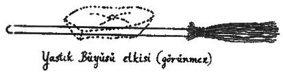

Dokuzuncu Bölüm:
Sürat Süpürgesinin Gelişimi
On dokuzuncu yüzyılın başlanna dek, Quidditch farklı farklı kalitelerdeki gündelik süpürgelerle oynanırdı. Bu süpürgeler ortaçağdaki öncülerine kıyasla çok daha gelişmişti; 1820'de Elliot Smethwyck'in icat ettiği Yastık Büyüsü, süpürgeleri çok daha konforlu hale getirdi (bakınız: Resim G). Diğer taraftan, on dokuzuncu yüzyıl süpürgeleri yüksek hızlara çıkamıyordu ve yükseldikçe kontrol edilmeleri zorlaşıyordu. Süpürgeler bireysel süpürge imalatçıları tarafından elde yapılıyordu. Her ne kadar üslup ve işçilik açısından takdire değer olsalar da, performansları nadiren güzel görünümlerine denk oluyordu.
Meşesap 79'u ele alalım (ilk olarak 1879'da yapıldığı için bu ismi taşır). Portsmouth'lu süpürge imalatçısı Elias Grimstone tarafından elde yapılan Meşesap, çok kalın bir meşe sapa sahip, güzel bir süpürgedir. Tasarımında, uzun uçuşlara ve sert rüzgârlara dayanabilmesi hedef alınmıştır. Meşesap günümüzde koleksiyonlarda rastlanan çok değerli bir süpürge, ama bu süpürgeyi Quıddıtch'te kullanma çabaları hiçbir zaman sonuç vermedi. Yüksek hızlarda dönüş yapmak için fazla hantal olan Meşesap, kıvraklığı güvenliğe tercih edenlerden hiç rağbet görmedi. Yine de Jocunda Skyes'ın 1937'de gerçekleştirdiği ilk Atlantik-aşırı süpürge uçuşunda kullanılan süpürge olarak her zaman hatırlanacaktır (O zamana dek büyücüler bu tür mesafelerde süpürgeye güvenmektense gemiye binmeyi tercih ediyorlardı. Cisimlenme ise çok uzun mesafelerde giderek daha da riskli hale gelir ve kıtalararası Cisimlenme'ye sadece son derece becerikli büyücülerin kalkışmaları salık verilir).

Çizim F
İlk kez 1901'de Gladys Boothby tarafından üretilen Ayçelen, süpürge yapımında bir atılımı temsil ediyordu. Bir aralar bu ince, dişbudak saplı süpürgeler, Quidditch süpürgesi olarak epey talep gördü. Ayçelen'in öteki süpürgelere göre en önemli avantajı, daha önce mümkün olandan çok daha fazla yükselebilmesi ve bu yüksekliklerde güvenilirliğinden bir şey yitirmemesiydi. Ancak Gladys Boothby, Quidditch oyuncularının verdikleri süpürge siparişlerine yetişemiyordu. Bu yüzden yeni bir süpürgenin, Gümüş Ok'un yapımı sevinçle karşılandı: Ayçelen ya da Meşesap'tan çok daha yüksek hızlara (arkadan rüzgârla saatte 115 kilometreye) çıkabilen Gümüş Ok, sürat süpürgesinin gerçek öncüsü sayılır. Ancak Gümüş Ok da öbür ikisi gibi tek bir büyücünün (Leonard Jevvkes'in) elinden çıkıyordu ve o da çok sayıdaki talebi karşılayamadı.
Bu konudaki devrim 1926 yılında, Bob, Bill ve Barnaby Ollerton kardeşlerin Silsüpür Süpürge Şirketi'ni kurmalarıyla gerçekleşti. İlk modelleri Silsüpür Bir, daha önce eşi benzeri görülmemiş sayılarda üretiliyor ve özellikle sporda kullanılmaya yönelik bir sürat süpürgesi olarak pazarlanıyordu. Silsüpür çok kısa sürede çok büyük bir başarı elde etti, piyasada daha önce hiçbir süpürgenin kuramadığı türden bir hakimiyet kurdu. Çıkalı bir yıl olmadan, ülkedeki bütün Quidditch takımları Silsüpür'lere biniyordu.
Ancak Ollerton kardeşler uzun süre sürat süpürgesi pazarının tek hâkimi olarak kalamadılar, ikisi de Falmouth Falcons'ta oynayan Randolph Keitch ve Basil Horton, 1929'da ikinci bir sürat süpürgesi şirketi kurdular. Kuyrukluyıldız Ticaret Şirketi'nın ilk süpürgesinin adı Kuyrukluyıldız 140'tı (140, Keıtch'le Horton'ın süpürgeyi piyasaya sürmeden önce kaç kere test ettiklerini gösteriyordu). Patentli Horton-Keıtch fren büyüsü sayesinde artık oyuncular yanlışlıkla kalelerin üstünden geçip gitmek ya da sahanın dışına çıkmak gibi olayları çok daha az yaşayacaktı. Kısa sürede Kuyrukluyıldız, Britanya ve İrlanda takımlarının (bu sırayla) tercih ettiği süpürge haline geldi.
1934'te Silsüpür İki, 1937'de Silsüpür Üç, 1938'deyse Kuyrukluyıldız 180'in piyasaya çıkışıyla iyice kızışan Silsûpür-Kuyrukluyıldız rekabetine karşın, yeni süpürge imalatçıları Avrupa'nın her tarafında mantar gibi bitiyordu.
Kavkavur, 1940'ta piyasaya çıktı. Kara Orman'dan Ellerby ve Spudmore şirketi tarafından üretilen Kavkavur, son derece esnek bir süpürgedir, ama Kuyrukluyıldız'ların ve Silsüpür'lerin hızına hiçbir zaman erişememiştir. Ellerby ve Spudmore 1952'de yeni bir süpürge çıkardı: Çabukçubuk. Çabukçubuk, Kavkavur'dan daha hızlıdır, fakat yükselirken güç kaybetmeye eğilimli olduğu için hiçbir zaman profesyonel Quidditch takımları tarafından kullanılmamıştır.
1955'te Evrensel Süpürgeler Ltd. o zamana kadarki en ucuz süpürge olan Kayan Yıldız'ı tanıttı. Maalesef, hemen çok büyük bir popülerlik yakalayan bu süpürgenin yaşlandıkça hız ve yükseklik kaybettiği ortaya çıktı ve Evrensel Süpürgeler 1978'de kapandı.
1967'de süpürge dünyası, Nimbus Sürat Süpürgesi Şirketi'nin kuruluşuyla çalkalandı. Daha önce Nimbus 1000 gibi bir süpürge görülmemişti hiç. Saatte yüz altmış kilometre hıza ulaşabilen, havadayken durduğu yerde 360 derecelik dönüş yapabilen Nimbus, eski Meşesap 79'un güvenilirliğiyle en iyi Silsüpür'lerin rahat kullanımını birleştiriyordu. Nimbus, çıkar çıkmaz Avrupa'daki profesyonel Quidditch takımlarının tercihi haline geldi. Sonraki modeller de (1001, 1500 ve 1700) Nimbus Sürat Süpürgesi Şirketi'nin pazarın zirvesinde kalmasını sağladı.
İlk kez 1990'da üretilen Dalçal 90, Flyte ve Barker tarafından Nimbus'u zirveden indirmesi ümidiyle yapılmıştı. Dalçal çok iyi bir cilaya sahipti ve Dahili Uyan Düdüğü, Kendinden Düzelen Kuyruk Çalıları gibi yeni özellikler sunuyordu. Ancak, yüksek hızlarda eğrildiği keşfedildikten sonra, "sadece aklından çok Galleon'u olan büyücülerin bindiği bir süpürge" gibi talihsiz bir şöhrete sahip oldu.